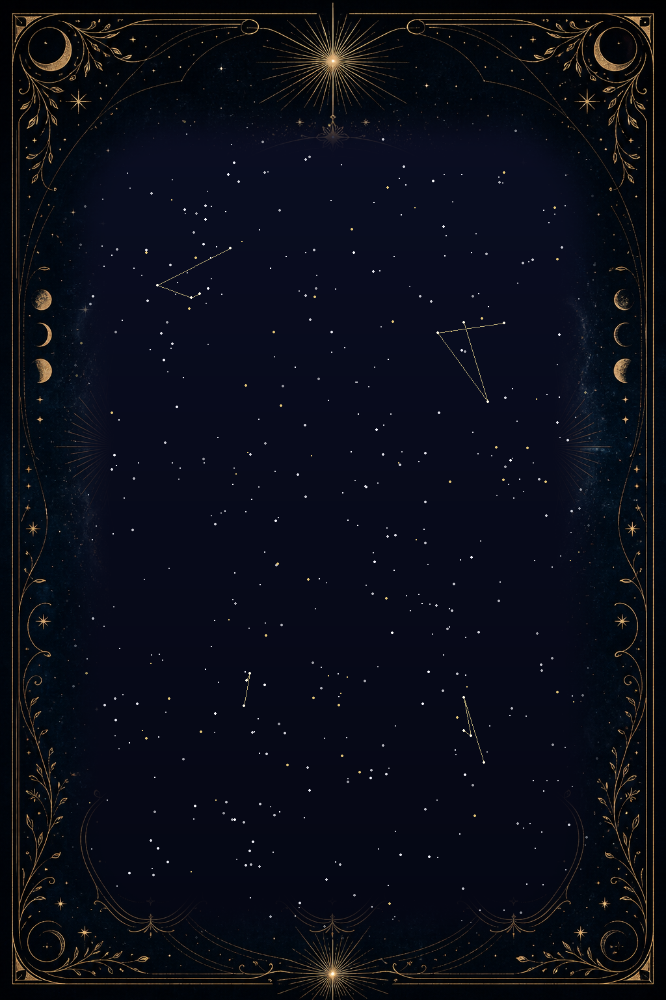

The Sky at Your Birth
Your personal star chart from your birth date, time and place — in a cinematic 3D universe.

Explore Your Natal Chart
How does it work?
Enter your name and birth date, time and place; the positions of the planets at that moment are drawn as a unique chart. Keep it digital or print it as a poster.
Traces in the Cup
Drink your Turkish coffee, turn the cup over and take a photo. AI reads the symbols in the grounds and interprets your fortune.
The Lines on Your Palm
Upload a close-up photo of your palm; AI marks the lines and interprets your life, heart and head lines.
Guidance of the Stars
Pick your sign and read your daily · weekly · monthly reading.
Aries · DailyYour energy is high today; a good day to start something you've put off. An afternoon message may change your plans…
(Sample text — the real module will generate readings automatically.)
Ask Your Oracle
Ask what's on your mind; chat in the light of your chart, readings and sign.
Add to home screen — save this app to your phone.